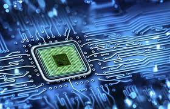
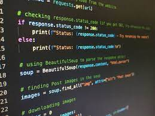

Eu me chamo Raphael Gaias Wrublewski e nasci dia 12 de Outubro de 2003 aqui em Curitiba. Estudei minha vida inteira no Colégio Positivo, onde fiz quase todas as minhas amizades. Antes de acabar o terceirão tive a oportumidade de fazer um intercâmbio para o Canadá, onde fiquei 6 meses e tive a melhor experiência da minha vida.
Agora estou cursando Ciência da Computação na PUCPR e essas são as matérias:
Nessa matéria usamos nosso conhecimento para aplica-lo num projeto. Até agora completamos 3 projetos.
Nesse projeto nosso grupo decidiu por fazer um jogo estilo Top-Down de tiro no espaço e obtivemos bons resultados.
Esse foi o projeto mais difícil de todos pois meu grupo decidiu fazer um jogo 3D nessa plataforma, o que não é nada fácil. Tivemos vários problemas mas no final entregamos o jogo que foi um estilo Escape Room.
E por último iremos fazer um site de turismo sobre Lapa, tem muita coisa a se fazer ainda mas ficará bem legal.
Em Filosofia ao contrário das outras matérias trabalhamos o nosso lado intelectual estudando filósofos tanto da antiguidade como da atualidade. Nesa matéria tivemos questionários no Socrative.student, discussão sobre Fake News, um seminário sobre o Byung-Chul Han.
Em Sistemas Ciber-físicos o principal objetivo é trabalhar com a parte mecânica do curso, como microprocessadores, servidores e outras coisas aplicadas à Sistemas Ciber-físicos e IOT's(Internet das Coisas). Nós já trabalhamos com Arquitetura de Computadores, Sistemas Operacionais e Rede de Computadores. Com Sistemas Operacionais Fizemos o primeiro trabalho sobre o sistema da Xiaomi, o MIUI. E agora com Rede de Computadores estamos fazendo um projeto que consiste num aparelho automático que resolva um problema da cidade, e meu grupo escolheu fazer um painel solar que gira de acordo com a intensidade da luz.
É nessa matéria que a gente aprende a parte técnica do curso. Nela nós entendemos como funciona o python, apredemos a usar ele, e fazemos projetos utilizando as funções do python como while, for, if, def, entre outros. Com o que aprendemos nessa matéria fizemos um jogo da velha e um jogo de batalha naval no PyCharm.
Nessa matéria nós apredemos a resolver problemas não só de matemática mas de outras coisas de forma lógica. Fizemos várias listas de exercício de preposições, conectores e tabela verdade para fixar o conteúdo